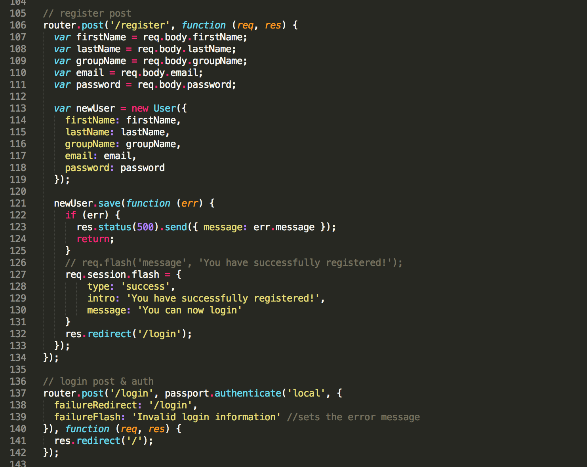
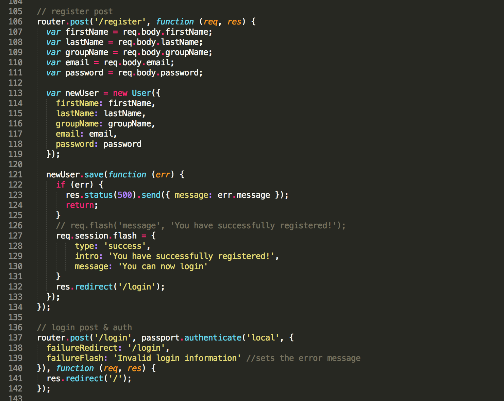
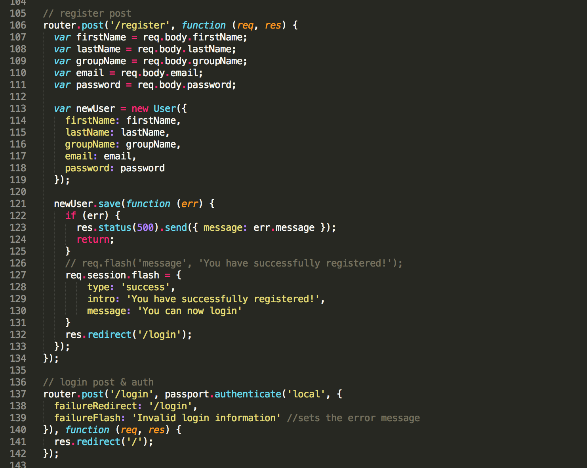
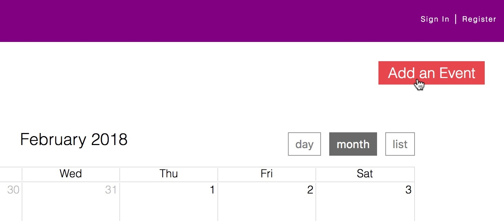
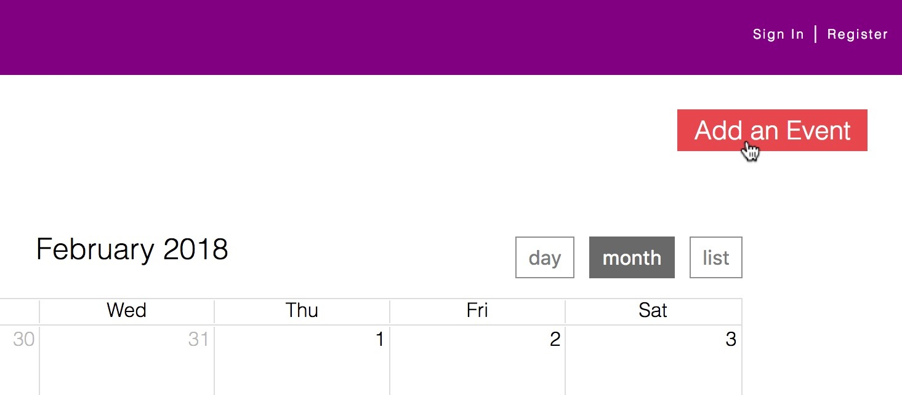

BLOCS
A project site developed using an original concept for further exploration into web development. The site serves as a hub for groups to publicly pledge their participate in civic activities as a unit therefore making it easier for organizers to amass participants, anticipate the number of attendees and for individuals to tag along as part of a group. The site features a calender of events, registration, login & search capabilities based on zip code, group or theme.
The first part of this project was very conceptual. Imagining a platform that would invite people to be active, making use of pre-existing communities and groups of friends while also reaching out to individuals to join in. How would a person use the site, what would they be looking for?
Starting to put into place mechanisms under the hood that would make it a functional site. Structured in node.js using express and handlebars with mongoDB on the back end, I've got express router rendering my pages, adding in express session and passport for user sign in and registration with a user schema for mongoose.

Fully fledged homepage, building on top of user accounts with event search features by location, topic and host group. The addition of an open source calendar, to which users can add events via multiple buttons posting to the database through forms. Plus some custom cosmetic changes to the calendar incuding tooltips for quick glance event info.
 
